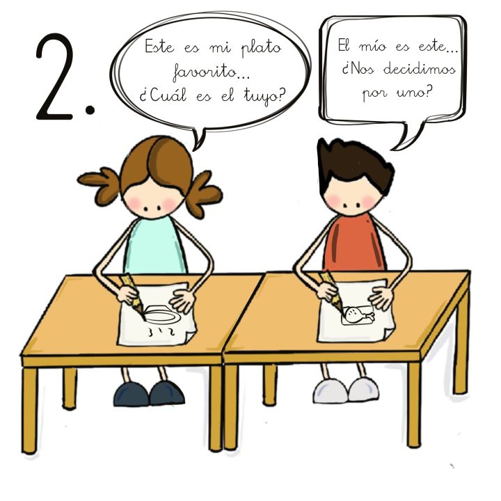
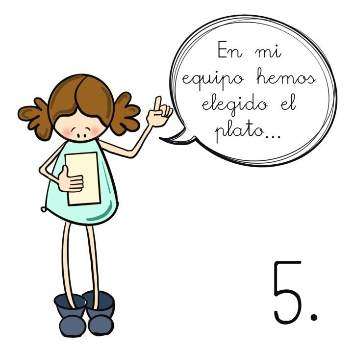

Después, subraya con un lápiz de color las ideas clave.
Las ideas clave son las más importantes.
Las ideas que necesitas para poder hacer la receta de la que habla el texto.
Definición:
Piso pequeño para vivir.
Ejemplo:
Mi tía tiene un apartamento en la playa.
Definición:
Idea más importante del tema sobre el que hablamos o escribimos.
Ejemplo:
La maestra apuntó las ideas clave del tema en la pizarra.
¿Recuerdas qué debes conocer para hacer una receta?
Para elaborar una receta lo más importante es saber los ingredientes y cuáles son los pasos a seguir.
Reflexiona
¿Te has fijado en lo más importante de la receta? Identificar los ingredientes y los pasos a seguir es lo más importante. Las palabras que nos dicen lo que hay que hacer son las que nos indican los pasos a seguir en la receta, ¡tenlo en cuenta!
3. Te cuento mi receta
Vamos a trabajar en nuestra receta, una que te guste.
Paso 1
Piensa un plato que te guste.
Paso 2
Escribe los ingredientes que lleva o necesitas para elaborar la receta.
Paso 3
Pon los utensilios necesarios para elaborar la receta. ( Mira el ejemplo)
Paso 4
Escribe los pasos que se necesitan para elaborar la receta.
Lectura facilitada
Paso 1
Cada uno piensa un plato que le guste.
Paso 2
Comparte la respuesta con la persona que tienes al lado.
Después, elegid uno de los dos platos que habéis dicho.

Paso 3
Poned la respuesta en común con la pareja que tenéis enfrente.
Paso 4
Elegid un plato final en equipo.
Paso 5
El o la portavoz del equipo lee en voz alta la respuesta.

Definición:
Persona que ha sido elegida para representar a un grupo y hablar en su nombre.